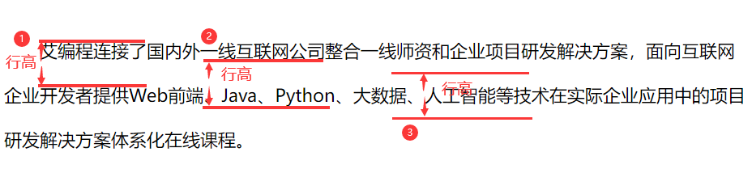

CSS基础认知
一、简介
CSS又称层叠样式表，它是一种标记语言，而不是编程语言
作用：给html标签添加样式
CSS已经发展到CSS3，在最新版本3.0中，增加了大量功能，以前只能用JS才能实现的现在用CSS3也能做到
要清楚CSS3新增了哪些功能，与之前版本的不同在哪
web前端三大核心基础：
| 分层 | 语言 | 功能 | 描述 |
|---|---|---|---|
| 结构层 | HTML | 搭建结构、放置部件、描述语义 | 骨骼 |
| 样式层 | CSS | 美化页面，实现布局 | 皮肤 |
| 行为层 | JavaScript | 实现交互效果，数据收发、表单验证等 | 神经 |
二、基本语法
CSS规则集：选择器+声明块
- 选择器是指需要改变样式的html元素
- 声明块用
{}包裹，里面有多条声明，每条声明块之间用;间隔 - 每条声明包含一个属性名称和一个值，以冒号分隔
- 最后一条声明可以不写
;，但为了统一标准，建议书写完整
- 最后一条声明可以不写
CSS样式的书写方式
- 方式一：每一行一条声明，选择器与声明之间一个空格，冒号后面一个空格
p {
color: red;
font-size: 20px;
}
开发中使用方式一，方便阅读和修改
- 方式二：选择器和声明写在一行
p {color: red;font-size: 20px;}
- 项目上线时，会把CSS样式进行压缩，压缩后就是方式二的写法
CSS注释
- 注释方式：
/* 注释 */ - 位置：只能放置在style里
- 快捷键：
ctrl+/
与html注释的区别：
- 写法：
<!-- 注释--> - 能放置在html的任何位置
CSS的书写位置
- 方式一：行内样式
- 在标签中加入style属性
<h2 style="color: red>行内样式</h2>
- 方式二：内嵌样式/内部样式
- 在
<head></head>标签对中写style属性 - 在HTML5中，type可以不写
- 在
<head>
省略html框架
<style type="text/css">
h1 {
color: bule;
font-size: 20px
}
</style>
</head>
- 方式三：外链样式/外部样式
- 新建一个
.css文件，使用link标签引入到界面中 - link标签要写在head中
- 优点：多个网页可以共用一个CSS样式文件
- 新建一个
<head>
<link rel="stylesheet" href="文件路径"/>
</head>
`rel=”stylesheet可以不写”
- 方式四：导入式样式
- 导入
.css的文件 - 缺点：使用导入式的样式表，页面加载完成后才会加载样式；所以在CSS文件加载完成之前，网页就会呈现没有CSS样式的裸奔现象
- 导入
<style>
@import url(文件路径)
</style>
- 实际开发中很少用到
总结：CSS4 种书写位置特点与区别
CSS样式的优先级
==行内样式==的优先级最高
内联样式和外部样式优先级相同，按照==就近原则==渲染：渲染离标签更近的
三、CSS选择器
选择器分类
- 传统 CSS2.1 选择器
- 标签选择器和 id 选择器
- class（类）选择器
- 复合选择器
- 伪类
- CSS3 新增选择器
- 元素关系选择器
- 序号选择器
- 属性选择器
- CSS3 新增伪类
- 伪元素
- 层叠性和选择器权重计算
标签选择器
- 又称元素选择器/类型选择器
- 直接使用==元素的标签名==当做选择器，将选择页面上的==所有该种标签==，无论位置深浅
- 作用：由于覆盖面非常大，所以适用于标签样式的初始化
ul{
list-style:none;
}
a {
text-decoration:none;
}
id选择器
- id选择器是使用元素的id属性来选择特定元素
- 写法：
#+id名 - 作用:元素的id是唯一的，所以用于选择一个唯一的元素
- id的正确命名规范：
- 只能由字母、数字、下划线
_、短横线-构成 - 不能以数字开头
- 区分大小写
- 最好多个单词之间以
-分割
- 只能由字母、数字、下划线
<style>
#box1 {
color:orange;
}
</style>
<body>
<h3 id="box1">三级标题</h3>
</body>
class选择器
- class属性表示”类名”
- 类名的命名规范与id相同
- 写法：
.+class名- 多个标签可以使用相同的类名
- 同一个标签可以属于多个类，类名之间用空格隔开
- 原始类
- 应用场景：组件化开发
- 在网页项目前，可以将所有的常用字号、文字、颜色、行高、外边距、内边距等设置为单独的类
- HTML标签就可以”按需选择”它的类名，以快速添加样式
通配符选择器
- 可以作用于页面当中的所有元素
- 基本不用，对性能消耗过大
- 写法：
*
* {
color:green;
}
复合选择器
| 名称 | 示例 | 说明 |
|---|---|---|
| 后代选择器 | .box .para |
选择类名为box的标签 内部的类名为para的标签 |
| 交集选择器 | li.para |
选择既是li标签，也属于para类的标签 |
| 并集选择器 | ul,ol |
选择所有ul和ol标签 |
- 后代选择器
- 在CSS中，使用==空格==表示
后代，不一定是“儿子” - 后代选择器可以有很多空格，表示隔开好几代
- 会同时选择满足条件的子和孙
- 交集选择器
- 没有空格
- 选择同时满足多个条件的标签
- 并集选择器
- 也叫做
分组选择器，逗号表示分组 - 同时选择多个标签
- 复合选择器：选择器可以任意搭配结合
伪类
伪类是添加到选择器的描述性词语，指定要选择元素的特殊状态
超链接拥有四个特殊状态
伪类 描述 a:link没有被访问的超级链接 a:visited已经被访问过的超级链接 a:hover正在被鼠标悬停的超级链接 a:active正在被激活的超级链接(按下按键，但还没有松开按键) 爱恨准则
- a标签的伪类书写，按照”爱恨准则”的顺序，否则会与伪类不生效
- LOVE HATE:
:link、:visited、:hover、:active
<style>
/*
顺序不能乱 ，爱恨准则 LOVE HATE
:link -> :visited -> :hover -> :active
*/
a:link {
color:red;
}
a:visited {
color:blue;
}
a:hover {
color: green;
}
a:active {
color:yellow;
}
</style>
注
- 遵守了爱恨准则，但
a:link不生效，是因为之前访问过的网址会被浏览器记录，就会显示a:visited的样式(修改网址或清除浏览记录即可) - 四个样式可以根据实际情况单独使用
- 伪类
:hover不仅可以用在a标签上，还可以用在其他标签上
元素关系选择器
- 子选择器
.bov>p { }- 两个标签要为父子关系，当使用
>符号分割两个元素时，他只会匹配那些作为第一个元素的直接后代元素 - 从IE7开始兼容
- 相邻兄弟选择器
.bov+p{ }- 第二个元素紧跟在第一个元素之后，并且这两个元素都属于同一个父元素的子元素
- 只会选择紧跟着的一个，就算有两个相同元素在第一个元素后面
- a+b即选择紧跟在a后面的第一个b
- 从IE7开始兼容
- 通用兄弟选择器
.box~p{ }a~b表示选择a元素==之后==所有的同级b元素- a之前的b元素是选择不到的
- 从IE7开始兼容
序号选择器
| 选择器 | 描述 | 兼容性 |
|---|---|---|
:first-child |
第一个子元素 | IE7 |
:last-child |
最后一个子元素 | IE9 |
:nth-child(n) |
第n个子元素 | IE9 |
:nth-last-child(n) |
倒数第n个子元素 | IE9 |
:nth-of-type(n) |
第n个某类型子元素 | IE9 |
:nth-last-of-type(n) |
倒数第n个某类型子元素 | IE9 |
:only-child |
选择没有任何兄弟元素的元素 |
注：
- 动态值写法：()可以写成
an+b的形式也可以用关键词，- n是自然数，从0开始计算
- a,b必须是整数，可正可负
- 2n=偶数=even,2n+1=奇数=odds，
nth-of-type(n)和nth-last-of-type(n)键选择==同种标签==指定序号的子元素
属性选择器
写法：
标签[属性]案例 描述 兼容性 img[alt]选择有alt属性的img标签 IE9 img[alt="icon"]选择alt属性是icon的img标签,属性里只能有icon这几个词 IE9 img[alt^="icon"]选择alt属性以icon开头的img标签,只有icon或者是以它开头都行 IE9 img[alt$="icon"]选择alt属性以icon结尾的img标签,只有icon或者以icon结尾的都行 IE9 img[alt*="icon"]选择alt属性中包含icon文字的img标签，sscion/icon-c/icon button都可以 IE9 img[alt~="icon"]选择alt属性中有空格隔开的icon字样的的img标签,只有icon属性/有包含icon在内的多个属性值 IE9 `img[alt =”icon”]` 选择alt属性以 icon-开头的img标签,只有icon属性/以icon-开头的属性都行以上标签、属性、文字都可以替换
注：实际开发中用的很少，只做了解即可
CSS3新增伪类
| 伪类 | 描述 |
|---|---|
:focus |
选择当前获得焦点的表单元素 |
:checked |
选择当前已经勾选的单选按钮或复选框 |
:empty |
选择空标签 |
:enabled |
选择当前有效的表单元素 |
:disabled |
选择当前无效的表单元素 |
:root |
选择根元素，即<html>标签 |
:focus：
- 可修改当前获得焦点的表单元素样式
- 自带outline样式
:checked - 可以用来修改复选框/单选框样式(原样式优先级太高，用div模拟复选框/单选框)，区别：单选框选中后不能取消
- 用label标签绑定复选框
input:checkbox(/单选框input:radio)、div.box、以及div下的div.item - 设置新选择框.box的样式、.item:被选中后的样式
- 用
display:none隐藏原选择框和.item input:checked+ .box .item {dispaly:block}表示被选中后，.box下的.item显示出来:empty:只能是空内容，有空格的标签不会被选中
CSS3新增伪元素
- CSS3新增了”伪元素”特性，表示”虚拟动态创建的元素”
- 伪元素用双冒号
::表示，IE8及以上兼容单冒号: - 语法：
element::before{ }
| CSS3新增伪元素 | 描述 |
|---|---|
::before |
匹配选中的元素的第一个元素 |
::after |
匹配选中元素的最后一个子元素 |
::selection |
选择器匹配被用户选取的部分 |
::first-letter |
会选中某元素中的第一行的第一个字母 |
::first-line |
会选中某元素第一行的全部文字 |
::placeholder |
自定义表单元素的占位文本样式 |
::before和::after
企业应用：各种小图标、CSS精灵图
这两个伪元素必须使用
content属性表示其内容，绝对不能省掉为选中的元素添加修饰性的内容，此元素默认为行内元素
第一种情况：给子元素/没有子元素的盒子加，就是给对应标签的前/后新增
content内容及样式
<div></div>
<p></p>
!-- 给这种情况加伪元素就算新增内容 -->
- 第二种情况：给父元素加，就会新增一个行内元素及样式
<div>
<p></p>
</div>
<!-- >这种情况就是新增行内元素 -->
::selection
- 被选中的部分会改变样式
- 只能向
::selection选择器应用少量的CSS属性:color、background、cursor以及outline::first-letter - 会选中某元素的第一行的第一个字母
- 必须是块级元素
::first-line1 - 会选中某元素的第一行的全部文字
- 必须是块级元素
CSS 选择器的权重计算
- 层叠性
- CSS 全名叫 层叠式样式表 ，层叠性是它很重要的性质
- 层叠性：多个选择器可以同时作用于同一个标签，效果叠加
- 层叠性的冲突处理
- 多个选择器定义同一元素的冲突问题
- CSS 有严密的处理冲突的规则
- id 权重 > class权重 > 标签权重 > 通配符权重
- 复杂选择器权重计算
- 复杂选择器可以通过（id的个数，class的个数，标签的个数）的形式，计算权重
- !important 提升权重
- 如果我们需要将某个选择器的某条属性提升权重，可以在属性后边写上
!important - 实际企业中，不允许使用
!important，因为这会带来不经意的样式冲突
作业
开关按钮
input:checked里面可以直接写按下开关后的样式- 优化：用伪元素替代没有内容的标签
CSS文本属性、字体属性、列表属性
一、CSS字体属性
color属性
- 可设置文本内容的字体颜色
- color属性有四种表示法：
英文单词表示法
- 应用场景：仅用于学习和测试，工作中不常用
color:red;
十六进制表示法
- 设计图中标注的颜色通常为十六进制表示
- 每一种颜色分量都是0~255的数字，十六进制的ff就是十进制的255
- 如果颜色值是两两相同，并且有三对，
#aabbcc的形式可以简写为#abc - 常用的十六进制表示法
| 色值 | 描述 |
|---|---|
#000 |
黑色 |
#fff |
白色 |
#ccc、#333、#2f2f2f、#666、#ddd |
灰色 |
rgb()表示法
- rgb是红蓝绿三个单词的缩写
- 三个数字的范围是0~255,数字之间用
,分隔
color:rgb(255,0,0);
<!-- 红色 -->
rgba()表示法
- 前三个数字是颜色,范围是0~255
- 第四个参数是透明度，范围是0~1，值越大越不透明
- rgba()表示法从IE9开始兼容
color: rgba(255,0,0,0.5)
font-size属性
- font-size属性用来设置文字的字号大小
- 单位通常为px(像素)、%(百分比)；移动端还会学习em、rem、vw、vh单位
- 网页文字正文默认为为16px，1em=两个字符
- 浏览器最小支持12px字号
- 面试题：如何在页面中设置小于12px的字体(学到动画时会讲)
- 百分比是相对于父元素的font-size而言
<style>
.fon1 {font-size:12px;}
.fon2 {font-size:16px;}
div p {font-size:50%;}
</style>
<body>
<p>这是一段默认大小的文字</p>
<p class="fon1">字体大小为12px</p>
<div class="fot2">
父元素为16px
<p>字体大小为父元素的50%</p>
</div>
</body>
font-weight属性
- 用来设置字体的粗细程度
- 可以用属性值或者数字来设置大小
- 数字介于1~1000之间，数字越大，字体越粗
- 最终的粗细要在当前字体可行的精细范围之内
| 属性 | 描述 |
|---|---|
normal |
正常粗细，与400等值 |
bold |
加粗，与700等值 |
lighter |
比从父元素继承来的值更细(处在字体可行的粗细值范围内)，大多数中文字体不支持 |
bolder |
比从父元素继承来的值更粗(处于字体可行的粗细范围内)大多数中文字体不支持 |
<style>
.we1 { font-weight: normal; }
.we2 {font-weight: bold; }
.we3 {font-weight: 500;}
.we4 {font-weight: lighter;}
.we5 {font-weight: bolder;}
</style>
<body>
<p class="we1">正常粗细</p>
<p class="we2">加粗文本</p>
<div class="we3">
父元素为600
<p class="we4">比父元素更细</p>
<p class="we5">比父元素更粗</p>
</div>
</body>
4.font-style属性
- 设置字体的倾斜
属性 描述 normal取消倾斜，把默认倾斜的 i、em等标签设置为不倾斜italic设置为倾斜字体(常用)，如果当前字体没有可用的斜体版本，会选用 oblique替代oblique设置为倾斜字体，用常规字体模拟(不常用)
<style>
.sty1 {font-style: normal;}
.sty2 {font-style: italic;}
.sty3 {font-style: oblique;}
</style>
<body>
<i>这是一个默认倾斜字体</i> <br>
<i class="sty1">把默认倾斜设置为不倾斜</i>
<p class="sty2">italic下把不倾斜的设置为倾斜</p>
<p class="sty3">oblique下把不倾斜设置为倾斜</p>
</body>
font-family 字体类型
- 用于设置字体类型，浏览器默认字体为”微软雅黑”
- 可以设置多个字体类型，字体之间用
,分隔，如果第一个字体浏览器不支持，则会往后找；若都不支持，则会使用默认字体；
font-family:"Times New Rowman",Times,serif;
注：
- 中文字体要用
""包裹，英文字体中若有空格，也要用""(不加也可以) - 字体通常必须是用户计算机已经安装好的字体，所以设置为:”微软雅黑””宋体”较多
- 中文字体也可以用英文名
| 中文字体名 | 英文字体名 |
|---|---|
| “微软雅黑” | “Microsoft Yahei” |
| “宋体” | “SimSun” |
@font-face自定义字体
- 用来设置用户电脑里没有的字体，用户浏览网页时会下载相关字体
- 准备工作
- 必须自己定义新的字体(需要有字体文件)
- 用户加载网页时会同时下载字体文件
- 字体文件需要同时拥有五种格式的文件,因为根据操作系统和浏览器不同，有
eot、woff2、woff、ttf、svg
- 如何定义字体
@font-face{
font-family: ;/*字体类型*/
src: url(); /*引入字体类型*/
}
- 怎么做？
- 获得字体文件：建议使用免费可商用的阿里巴巴普惠字体，地址：https://www.iconfont.cn/webfont
- 输入要定义的文字，选择字体，下载字体包
- 使用@font-face声明字体
- 定义使用webfont的样式
- 为文字加上对应样式
注：可以直接复制demo的内容
<style>
@font-face {
}<!-- 使用font-face声明字体 -->
.web-font {
}<!-- 定义使用 webfont 的样式 -->
</style>
<body>
<p>要定义的文字</p>
</body>
二、CSS文本属性
text-decoration属性-修饰线
- 用于设置文本的修饰线外观
- text-decoration是以下四个属性的简写
- 可以写在一行，以空格分隔
- 注：其他三个属性的前提是
line
| 属性 | 属性值 |
|---|---|
| text-decoration-line | 下划线underline、删除线line-through、没有修饰线none |
| text-decoration-color | 文本修饰的颜色 |
| text-decoration-style | 波浪线wavy、实线solid、虚线dashed |
| text-decoration-thickness | 文本修饰线的粗细 |
<style>
p {text-decoration:underline red 5px;}
div {text-decoration:wavy underline purple 3px;}
/*有underline才有wavy*/
</style>
<body>
<p>有红色下划线的文本，下划线粗5px</p>
<div>一行有紫色波浪线的文本，线粗3px</div>
</body>
text-indent首行缩进
- 定义首行文本内容之前的缩进量
- 常用单位是
em、2em是两个字符的宽度 - 默认字符大小是16px，如果没有单独设置，那么2em=32px
<style>
.line1 {font-size:2em;}
/*字体大小为32px*/
.line2 {text-indent:2em;}
/*首行缩进2em，也就是32px*/
.line3 {font-size:2em;text-indent:2em;}
/*字体大小为32px,首行缩进4em=64px*/
</style>
<body>
<p class="line1">默认文本，设置字体大小是两字符</p>
<p class="line2">首行缩进两字符</p>
<p class="line3">首行缩进两字符，字体大小为两字符</p>
</body>
行高
行高的测量方式
①②是行高测量上的定义，==③==是行高的真实定义：文字所占空间高度的总高，文字在这个高度的垂直方向==居中==显示
主段落内容的行高至少应为
1.5如果文字的大小要随页面的缩放而变化，请使用无单位的数值，以确保行高会等比例的缩放
行高的值
| 单位 | 实例 | 说明 |
|---|---|---|
| px | line-height:30px; |
行高为30px |
| 数值表示法 | line-height:2; |
字号大小的两倍这是最推荐的写法，工作中常用倍数是1.25,1.5,1.75 |
| 百分比表示法 | line-height:200%; |
字号大小的两倍 |
| normal | line-height:normal; |
取决于客户端。桌面浏览器(包括Firefox)使用默认值，约为1.2，这取决于元素的font-family |
<style>
.p1 {line-height:20px;
background-color:skyblue;}
div {line-height:40px;
background-color: red;
font-family:"宋体"}
.p2 {line-height: 3;
background-color: aqua;
font-family: "微软雅黑";}
.p3 {line-heigt:normal;
background-color:coral;}
</style>
<body>
<p class="p1">设置行高为20px</p>
<div>这是一行行高40px的宋体</div>
<p class="p2">这是行高为3的微软雅黑</p>
<p class="p3">行高为normal的文字</p>
</body>
行文本垂直、水平居中
- 行文本垂直居中
- 设置**行高=盒子高度(height)**，即可实现单行文本垂直居中
- 对行内块元素无效
line-height: height的高度；
- text-align属性
- 定义行内内容(例如文字、图片、行内块元素)相对它的块父元素的对齐方式
- 注：块级元素不能用这个属性
- 常用属性值：
left、right、center
<style>
.l {text-align: left;}
.c {text-align:center;}
.r {text-align:right;}
</style>
<body>
<p class="l">这是居左文字</p>
<p class="c">这是居中文字</p>
<p class="r">这是居右文字</p>
</body>
font合写属性
- font属性可以用来作为
font-style、font-weight、font-size、line-height、font-family属性的合写 - 写法
- font属性连写时，必须设置
font-size和font-family才能生效 font-style和font-weight必须放在font-size之前- 连写时任何未指定的值都将设置为其对应的初始值，所以即使没有写行高，也有默认行高1.2
-行高写在fon-size后面，用/分隔
- font属性连写时，必须设置
font:italic 20px/1.2 "宋体";
word-spacing字间距
- 对中文无效，仅对英文单词有效
属性值 描述 normal 正常的单词间距，有字体和/或浏览器定义 长度 通过指定具体额外间距来增加字体的单词间距,可以是负数
letter-spacing字符间距
- 用于设置文本字符的间距
- 对中文和英文都有效，单词会被分隔成一个个字母
| 属性值 | 描述 |
|---|---|
| normal | 正常的单词间距，有字体和/或浏览器定义 |
| 长度 | 通过指定具体额外间距来增加字体的单词间距,可以是负数 |
<style>
.word1 {word-spacing:normal;}
.word2 {word-spacing:-10px;}
.letter1 {letter-spacing:10px;}
.letter2 {letter-spacing:-10px;}
.lo {letter-spacing:10px;}
</style>
<body>
<p class="word1">I love you ,我爱你,正常间距</p>
<p class="word2">I love you ,我爱你,负间距</p>
<p class="letter1">I love you ,我爱你,10Px间距</p>
<p class="letter2">I love you ，我爱你，负间距</p>
<div>I love you<p class="lo">我爱你</p></div>
</body>
列表样式
list-style-type
- 设置列表项标记的类型
- 实际开发中的一般会把前面的标记类型去掉，用做好的小图标替代
| 值 | 描述 |
|---|---|
| none | 无标记(去掉圆点) |
| disc | 默认，实心圆 |
| circle | 空心圆 |
| square | 实心方块 |
| decimal | 数字 |
| decimai-leading-zero | 0开头的数字，01、02、03 |
| lower-alpha | 小写英文字母 |
| upper-alpha | 大写英文字母 |
| …… | 标记的类型有20多项，但实际开发中几乎不用 |
联系之前在HTML学过的列表标签:
- 注：
style=""等于写在<style>标签里
| html(已废弃) | CSS |
|---|---|
type="circle" |
style="list-style-type:circle" |
ol-li |
list-type:decimal |
2.list-style-image
- 用来指定列表中的列表标记图像，几乎不用
| 值 | 描述 |
|---|---|
| URL | 图像的路径 |
| none | 默认，无图形被现实 |
| inherit | 规定从父元素继承该属性的值 |
3.list-style-position
- 规定列表中列表项目标记的位置，几乎不用
| 值 | 描述 |
|---|---|
| inside | 列表标记项目放置在文本以内，环绕文本并根据标记对齐 |
| outside | 默认，标记位于文本的左侧、且放置在文本以外，环绕文本不根据标记对齐 |
| inherit | 规定从父元素继承该属性的值 |
4.list-style
- 这是以上三个的综合写法
list-style:delcima-leading-zero outside;
- 实际开发中用的最多的是去掉标记:
list-style-type:none;、list-style:none;